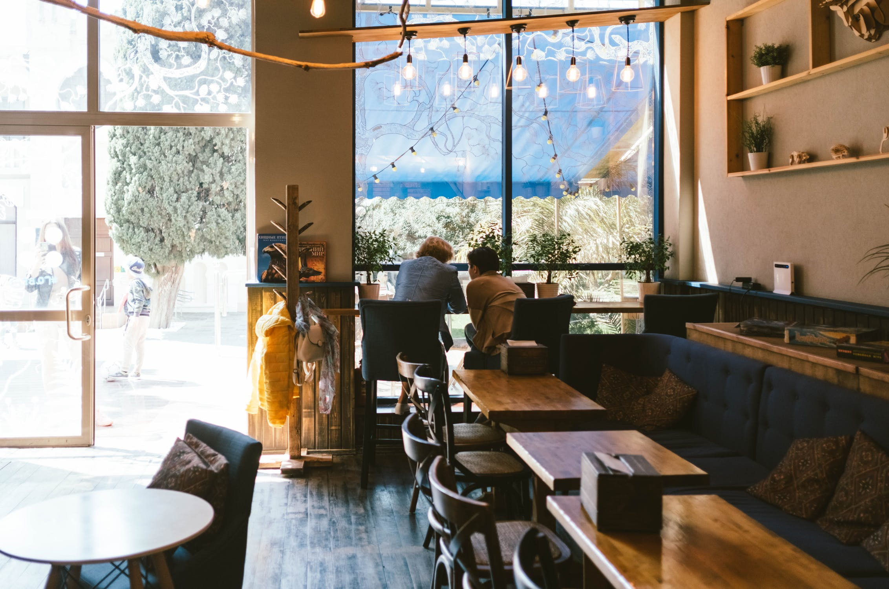
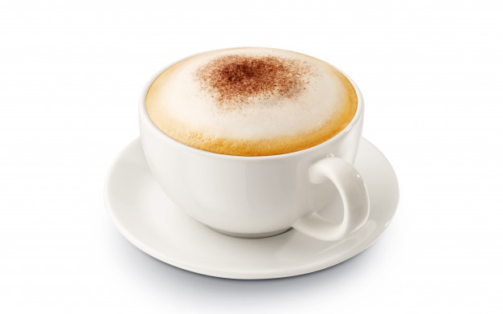
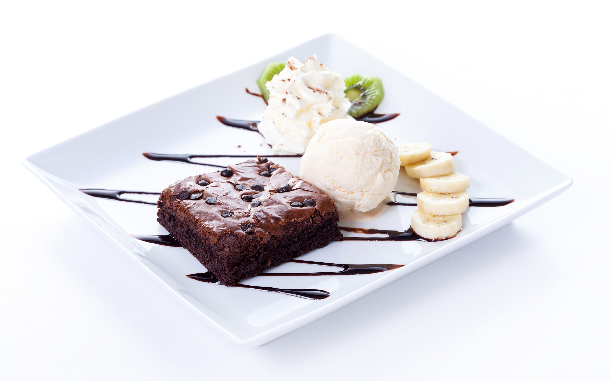
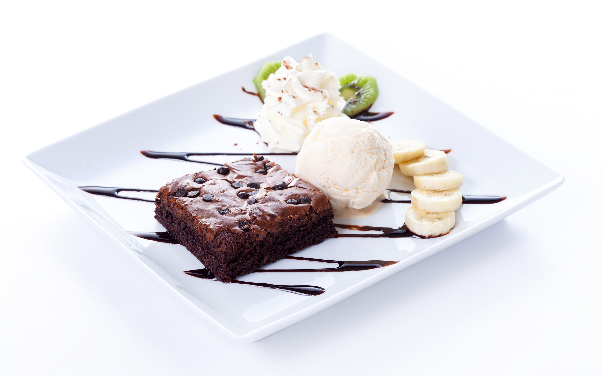

Nuestra historia

Cafetería Holmes es una pequeña empresa situada en la ciudad de Valencia dedicada al servicio de desayunos y almuerzos, acompañados siempre de un buen café de la mejor calidad posible, preparado por nuestros expertos en nuestro local recién reformado. En él te sentirás más cómodo que nunca; ¡Ven para apreciarlo tú mismo!
Sientete como en casa

Cada cierto tiempo se realizarán eventos en el local, asi que infórmate de ellos en la pestaña de eventos. Además, junto con una consumición tendrás acceso a nuestra red wifi, ¡siéntete libre de utilizarla con tu dispositivo electrónico favorito!
Nuestros productos

 

No te olvides de echar un ojo a nuestra carta donde encontrarás todo tipo de desayunos y almuerzos únicos. ¡Y recuerda que puedes reservar tu sitio favorito!